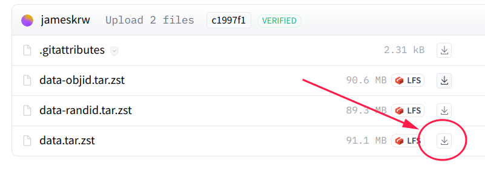

Data
Data location
Our data are hosted on Huggingface. We provide access to the following collections:
| Name | Description | Purpose | variations |
|---|---|---|---|
| data/huggingface | A cleaned collection that only contains test-ready releases | Good for LLM benchmark | - data.tar.zst - data-objid.tar.zst - data-randid.tar.zst |
| data-intermediate/huggingface | A full collection with all of our labeling and intermediate files | If you are interested in dig deeper into data labeling, or derive further customized version | - data-intermediate.tar.zst - data-intermediate-objid.tar.zst - data-intermediate-randid.tar.zst |
note: if your connection to huggingface.co is slow, you can find us on Huggingface mirror
Variations
70-step vs all-step version
In our paper, we benchmark using the first 70 steps of the walkthrough from each game. We also provide all-step versions of both data and data-intermediate collection.
Word-only & Word+ID
-
word-only
data[-intermediate].tar.zst: We have one version where all nodes are labeled by additional descriptive text to distinguish different locations with similar names. -
word + jericho ID
data[-intermediate]-objid.tar.zst: In addition, we also prepared another version, where nodes are labeled using minimaly fixed names with object id from Jericho simulator. -
word + random ID
data[-intermediate]-randid.tar.zst: A variation of the Jericho ID version, where the Jericho object id replaced with randomly generated integer.
We primarily rely on the word-only version as benchmark, yet providing word+ID version for diverse benchmark settings.
How to use
Because some json files are huge, we use tar.zst to package the data.
1. Download data from Huggingface
by directly download

by git
Make sure you have git-lfs installed (https://git-lfs.com)
git lfs install
git clone https://huggingface.co/datasets/mango-ttic/data
# or, use hf-mirror if your connection to huggingface.co is slow
# git clone https://hf-mirror.com/datasets/mango-ttic/data
If you want to clone without large files - just their pointers
GIT_LFS_SKIP_SMUDGE=1 git clone https://huggingface.co/datasets/mango-ttic/data
# or
# GIT_LFS_SKIP_SMUDGE=1 git clone https://hf-mirror.com/datasets/mango-ttic/data
2. Decompress to your_folder
Before decompressing the data, make sure your_folder exists. If not, create it by mkdir -p your_folder .
Some files are large, please be patient.
silently decompress
tar -I 'zstd -d' -xf data.tar.zst -C your_folder
or, verbosely decompress
zstd -d -c data.tar.zst | tar -xvf - -C your_folder